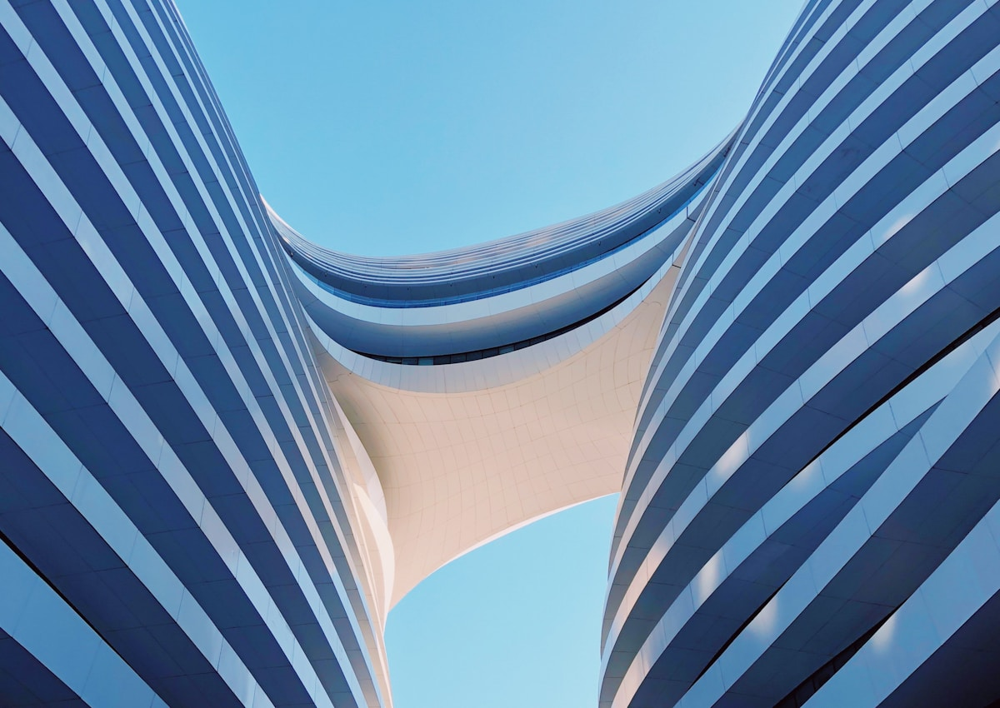

Набор мокапов помогает бренду выглядеть цельно в разных форматах
Product mockup set — это не один hero-кадр, а система изображений: продуктовые ракурсы, digital-носители, карточки, баннеры, презентационные сцены и visual kit, который команда может использовать снова и снова.
Product mockup set
Набор продуктовых мокапов для бренда: предметная подача, digital-сцены, presentation visuals, social-форматы и единая визуальная система.

Экранные мокапы помогают показать digital-продукт в понятной, коммерчески готовой среде.

Контекстный кадр добавляет реалистичность: продукт становится частью рабочего сценария.
Все кадры должны выглядеть как часть одного бренда
Даже если мокапы используются в разных местах, они должны сохранять общий visual code: свет, фон, тип композиции, плотность кадра, акценты и уровень premium-подачи.

Presentation-визуал помогает объяснять продукт на встречах, в deck и коммерческих материалах.

Абстрактный visual layer добавляет бренду современность и помогает создавать более гибкие материалы.
Visual kit ускоряет работу команды
Когда набор мокапов уже собран, команда быстрее делает новые страницы, слайды, посты, баннеры и кейсы. Это снижает хаос в визуальной коммуникации и помогает бренду выглядеть стабильнее.
Один набор — разные каналы
Мокапы заранее готовятся под несколько задач: wide hero, square social, vertical stories, presentation cover, product detail, banner crop и внутренние слайды.
Что входит в mockup set
Hero-мокап, detail shots, context scenes, presentation visuals, social-форматы, рекламные crop-версии и правила использования набора.
У бренда появляется готовая visual-библиотека
Итог — набор мокапов, который можно использовать в сайте, презентациях, рекламе, social и product-коммуникации.